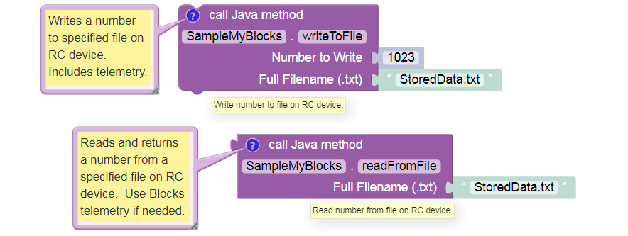
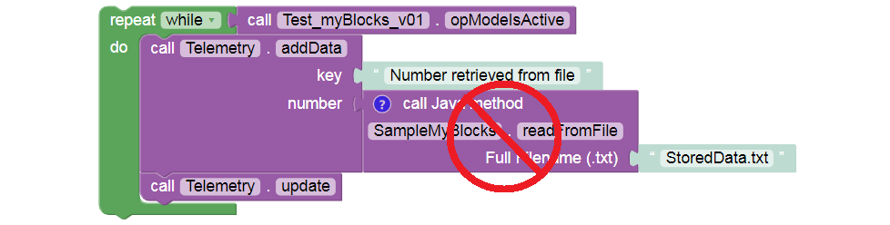
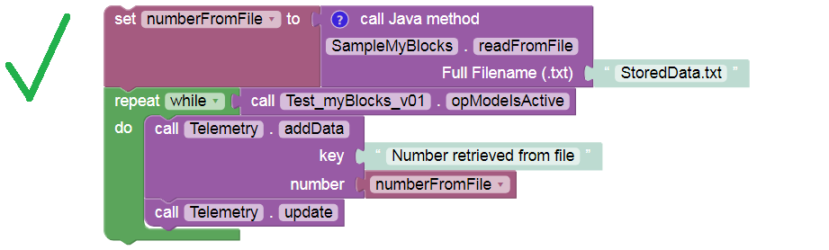

Example: Read-Write File Access
The current version of regular Blocks (SDK 7.0) does not provide read/write access to an external file, other than automatic Log or Match Log file entries. File access is a useful capability, available so far to Java programmers only. Now it can be done with myBlocks!
Here’s an example pair of myBlocks. One myBlock writes a numeric value to a specified filename, and a companion myBlock can later read that value from the same file.
The file is stored on the Control Hub or RC phone, in the FIRST/settings folder. It exists separately from the RC app, OpModes, and other files.
Write and read actions can happen in the same OpMode or different OpModes, allowing various scenarios:
Autonomous passes information to TeleOp. For example, what was the latest value of a sensor or encoder?
A special set-up OpMode allows gamepad input to choose an autonomous strategy and adjust key parameters. The robot could then be idle for a long time, even turned off. When the match begins, the Autonomous OpMode would read those settings and implement the chosen/adjusted actions.
A dedicated log file reports key sensor data in a custom format, with optional time-stamps. For program development and debugging, this could be more efficient than working with the large standard logs or Match Logs.
The Java code for this example is available below, with extensive comments that explain some unfamiliar Java expressions. The code can be copied and pasted directly into OnBot Java or Android Studio.
Programming tip: Instead of memorizing every possible Java command, programmers often study and modify existing code for a similar task. Unfamiliar commands are explored with an internet search, reference book, at the Javadoc reference, or at the official Oracle Javadoc.
This simple example supports only a single numeric value per filename. Better versions would allow multiple values and data types – a good programming challenge!
Be careful about placing myBlocks inside loops. Expanding on the current example, your myBlock might read a larger amount of (unchanging) data from a file. If your OpMode needs that data only once, reading the file in a loop needlessly adds cycle time and might increase the risk of a corrupt or interrupted read operation.
Instead, read the file once and store the relevant data in a variable or array. Then process the variable as needed, inside the loop.
The same suggestion might apply to reading sensors and encoders, if the data are not changing and are needed only once.
Example Code
/*
This example is used in a tutorial on FTC myBlocks.
It shows how one myBlock can write a number to a file on the RC phone
or Control Hub, and another myBlock can read that number from the file.
This is not possible with regular Blocks, in FTC app version 6.1.
This example assumes a team wants to store and retrieve a *number*, not text.
The file operations shown here are intended for storing and retrieving
text information. So this example stores a number as text, requiring conversion
when writing and when reading.
If a team instead wants to store an actual text string, this example could be
simplified (conversions not needed).
A challenge for the student: write and read *multiple* values, that might
be used for robot set-up, calibration, or choices of autonomous program.
Note 1: The method getSettingsFile() retrieves the settings (including location)
of the named file. If the file doesn't already exist, it is created
in the FIRST/settings folder. Put the filename in quotes if it's not
already a declared variable of type String.
Note 2: There is also a method copyFile(File fromFile, File toFile).
Note 3: The method String.valueOf() reads a numerical value as a String.
Note 4: The parseDouble() method interprets a String value as a double.
The trim() method removes any leading or trailing white space.
Note 5: The write and read myBlocks can omit the filename parameter, if a team
always uses the same file. In such case the filename can be declared
once at the class level (must be static), and used by all myBlock
methods. Like this:
static File myFileName = AppUtil.getInstance().getSettingsFile("myTestFile.txt");
Note 6: The class ReadWriteFile does not appear to have a method for
appending to a file. Might need to use java.io.Writer.write() or a
java.io.FileWriter method.
*/
package org.firstinspires.ftc.teamcode;
// these are (usually!) added automatically by OnBotJava when needed
import org.firstinspires.ftc.robotcore.external.BlocksOpModeCompanion;
import org.firstinspires.ftc.robotcore.external.ExportToBlocks;
import com.qualcomm.robotcore.util.ReadWriteFile;
import org.firstinspires.ftc.robotcore.internal.system.AppUtil;
import java.io.File;
public class SampleMyBlocks_v05 extends BlocksOpModeCompanion {
// This Annotation must appear immediately before any myBlock method.
// It's optional to add a comment, tooltip, and/or parameterLabels.
// Comment must appear on a single line, no rollovers.
@ExportToBlocks (
comment = "Writes a number to specified file on RC device. Includes telemetry.",
tooltip = "Write number to file on RC device.",
parameterLabels = {"Number to Write", "Full Filename (.txt)"}
)
// This myBlock method writes a number (as text) to a file.
// It has 2 inputs and no outputs (keyword void).
public static void writeToFile (double myNumber, String toFileName) {
// Using the properties of the specified "to" file name,
// declare a filename to be used in this method. See Note 1 above.
File myFileName = AppUtil.getInstance().getSettingsFile(toFileName);
// Write the provided number to the newly declared filename.
// See Note 3 above.
ReadWriteFile.writeFile(myFileName, String.valueOf(myNumber));
telemetry.addData("Filename", toFileName);
telemetry.addData("Number being written", myNumber);
telemetry.update(); // display info on Driver Station screen
} // end of method writeToFile()
@ExportToBlocks (
comment = "Reads and returns a number from a specified file on RC device." +
" Use Blocks telemetry if needed.",
tooltip = "Read number from file on RC device.",
parameterLabels = "Full Filename (.txt)"
)
// This myBlock method reads a number (as text) from a file.
// It has 1 input and 1 output (type double).
public static double readFromFile (String fromFileName) {
// Using the properties of the specified "from" file name,
// declare a filename to be used in this method. See Note 1 above.
File myFileName = AppUtil.getInstance().getSettingsFile(fromFileName);
// Read and store a number from the newly declared filename.
// See Note 4 above.
double myNumber = Double.parseDouble(ReadWriteFile.readFile(myFileName).trim());
return myNumber; // provide the number to the Block calling this myBlock
} // end of method readFromFile()
} // end of class SampleMyBlocks_v05